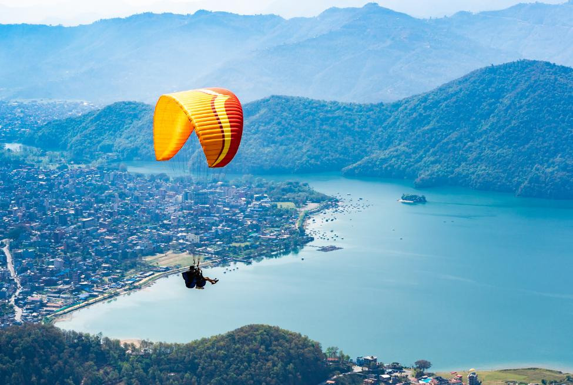

Skydiving: The Ultimate Adrenaline Rush

"Life begins at the edge of your comfort zone—so take the leap!"
Skydiving is the pinnacle of extreme adventure, offering an electrifying experience that combines adrenaline, freedom, and breathtaking views. The moment you leap from the plane, the world below turns into a vast landscape of endless possibilities, while the wind rushes past you at exhilarating speeds.
The image above captures the pure thrill of skydiving—three jumpers freefalling through the clouds, locked in mid-air synchronization. Their skillful maneuvers and controlled descent highlight the beauty of the sport, where trust, technique, and courage come together in an unforgettable aerial dance.
Whether you're a first-time tandem jumper or a seasoned professional, skydiving guarantees a surge of adrenaline like no other. So, fasten your harness, take a deep breath, and prepare to soar!
Skydiving Preparation
- Preparation for Skydiving: Skydiving preparation requires physical and mental readiness for a safe and thrilling experience.
- First Tandem Experience: Expect a safety briefing, gearing up with a harness and goggles, 30–60 seconds of freefall, and a 5–7 minute parachute glide under the instructor's supervision.
- Overcoming Fear: Use deep breathing techniques, trust the instructor's expertise, and focus on the excitement of the adventure.
- Essential Gear: Pack comfortable clothing, sturdy closed-toe shoes, goggles, and rely on the facility-provided equipment like harnesses.
- Choosing a Skydiving Center: Research certified schools with strong safety records, check affiliations like USPA, and visit facilities to assess staff quality and equipment.
- Physical & Mental Prep: Stay hydrated, eat light meals, rest well, and maintain a positive mindset to fully embrace the adventure.
Skydiving Techniques
- Body Positioning During Freefall: Maintain a stable arch position with hips pushed forward, arms and legs slightly spread, and head up to ensure control and balance.
- Parachute Deployment: Learn proper hand positioning and timing to deploy the parachute safely, typically around 3,000–5,000 feet, depending on the jump type.
- Advanced Maneuvers: Techniques like tracking (moving horizontally in freefall) and docking (approaching and linking with others) add precision and excitement to the experience.
- Formation Skydiving: Teams create intricate mid-air formations by synchronizing movements, requiring excellent coordination and communication.
- Wing Suit Flying: A more advanced technique where skydivers wear specialized suits to glide horizontally, achieving greater distance and speed.
Skydiving Safety
- Checking and Maintaining Equipment: Inspect parachutes, harnesses, and automatic activation devices (AADs) for wear or damage before every jump; ensure all gear is regularly serviced by certified professionals.
- Safety Protocols: Follow the instructor’s briefing carefully, perform a gear check with your jump partner, and adhere to proper body positioning and hand signals during freefall and landing.
- Debunking Myths: Skydiving is often misconceived as dangerous, but statistics show it’s exceptionally safe with a very low fatality rate when safety measures are followed.
- Emergency Scenarios: Learn how to handle issues like parachute malfunctions by deploying the reserve parachute and understand emergency protocols taught during training.
- Weather Conditions: Favor clear skies, minimal wind, and no precipitation for skydiving; delays or cancellations are common in unsuitable weather for safety reasons.
Skydiving Adventures
- Best Destinations: Top skydiving spots include Dubai's Palm Drop Zone, Interlaken in Switzerland, Queenstown in New Zealand, and California's Perris Valley—each offering breathtaking views and unique experiences.
- Skydiving Over Iconic Landmarks: Add adventure to your bucket list by jumping over landmarks like the Grand Canyon, Mount Everest, or Australia's Great Barrier Reef.
- Night Skydiving: Experience the ultimate adrenaline rush with night jumps, where the sky is lit by stars and ground lighting—reserved for experienced skydivers.
- Skydiving in Extreme Conditions: Prepare for challenges like cold climates or high altitudes by using specialized gear and practicing advanced techniques.
- Capturing Photos and Videos: Use helmet-mounted cameras or hire professional videographers to record incredible footage while ensuring safety and focus during the jump.
Skydiving as a Hobby or Career
- Becoming a Licensed Solo Skydiver: To become a solo skydiver, complete an Accelerated Freefall (AFF) training program, log a minimum number of jumps, and pass the required tests to earn your skydiving license.
- Career Opportunities: Professional skydiving offers roles such as instructors, camera operators, riggers (equipment specialists), and even performing in aerial shows or stunts for films.
- Skydiving Championships: Join competitive leagues or organizations, such as the USPA, and participate in events like formation skydiving, freestyle, or canopy piloting.
- Tandem Instructor Role: Tandem instructors manage jumps with beginners, requiring advanced licenses, extensive experience, and training in safety protocols and gear handling.
- Stories from Seasoned Skydivers: Experienced skydivers often share inspiring tales of overcoming challenges, exploring breathtaking destinations, and making life-long friendships through the sport.
History and Evolution of Skydiving
- Origins of Skydiving: Skydiving traces back to 1797 when André-Jacques Garnerin made the first recorded parachute jump from a hot air balloon, laying the foundation for modern parachuting.
- Technological Advancements: Innovations like steerable parachutes, automatic activation devices (AADs), and wing suits have dramatically improved safety, precision, and performance in skydiving.
- Record-Breaking Achievements: Iconic feats include Joseph Kittinger's high-altitude jump in 1960 from 102,800 feet and Alan Eustace's 2014 world record skydive from 135,898 feet.
- Evolution of the Sport: Skydiving transitioned from military use to recreational activity, becoming a popular extreme sport and fostering community-driven competitions like formation skydiving and canopy piloting.
- Famous Skydivers: Pioneers like Cheryl Stearns, Felix Baumgartner (Red Bull Stratos jump), and Luke Aikins have pushed boundaries and inspired generations with daring feats and innovations.
Skydiving Statistics and Facts
| Category |
Details |
| Annual Skydives (U.S.) |
Approximately 3.88 million jumps in 2024 |
| Fatality Rate |
0.23 deaths per 100,000 jumps in 2024 |
| Common Injuries |
Ankle injuries during landings are the most reported |
| Safety Equipment |
Modern parachutes include main and reserve systems with automatic devices |
| Tandem Jumps |
Tandem jumps are 2.5x safer than solo jumps |
| Drop Zones (U.S.) |
Over 230 drop zones affiliated with the USPA |
| Gear Costs |
Full parachute systems range from $2,500 to $9,000 |
Expanded Skydiving Facts
| Category |
Details |
| First Skydive |
André-Jacques Garnerin made the first recorded parachute jump in 1797. |
| Popular Skydiving Spots |
Dubai, Interlaken (Switzerland), and Fox Glacier (New Zealand). |
| Altitude for Tandem Jumps |
Typically 10,000 to 15,000 feet above ground. |
| Freefall Time |
Average freefall duration is 30–60 seconds, depending on jump altitude. |
| Training Levels |
AFF, Tandem, and Static Line are common methods. |
| Wing Suit Flight Speed |
Wing suit skydivers can reach speeds of up to 120–140 mph horizontally. |
| World Record for Highest Jump |
Alan Eustace jumped from 135,898 feet in 2014. |
| Longest Freefall |
Joseph Kittinger’s jump in 1960 lasted over 4 minutes. |
Conclusion
Skydiving is more than just an adventure; it's a leap into the extraordinary that tests your limits and leaves you exhilarated. As you freefall through the skies, the rush of wind, the panoramic views, and the feeling of absolute freedom combine into an unforgettable experience. Whether you're seeking to conquer fears, embrace spontaneity, or simply revel in the thrill, skydiving offers a unique perspective on life's possibilities. So take that bold step, and let the skies remind you of the courage within. The ultimate adrenaline rush awaits.
Skydiving is the perfect embodiment of thrill and freedom, offering an unmatched adrenaline rush as you leap into the open skies. The heart-pounding moments of freefall, the breathtaking panoramic views, and the sheer sense of liberation create an experience unlike any other. It's more than just an adventure—it's a bold challenge that pushes your limits and leaves you with an indelible sense of accomplishment. Skydiving transforms fear into exhilaration, reminding you that sometimes the most extraordinary moments lie just beyond your comfort zone!🪂✨